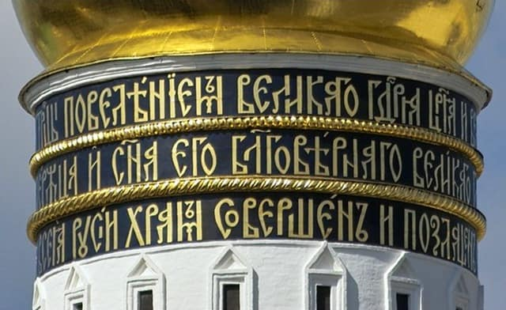
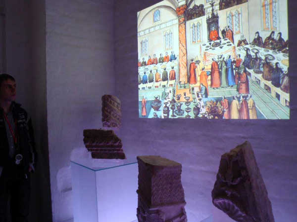
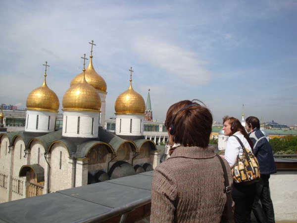
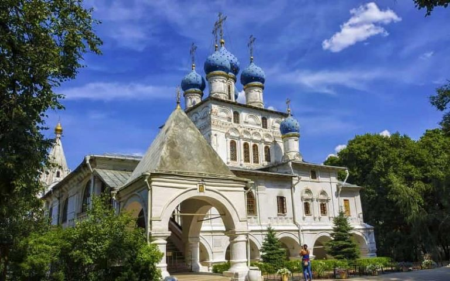

برج اجراس إيفان الكبير
برج اجراس إيفان الكبير Ivan the great bell tower هو واحد من أبراج قصور الكرملين ويعد أطولها على الإطلاق حيث يبلغ ارتفاعه 81 مترا، البُرج من أقدم معالم موسكو السياحية حيث بُني في عام 1508
ومُنذ ذلك الحين يُعد أشهر معالم السياحة في روسيا السياحية ، ويستقبل بشكل مُستمر العديد من الزوار من مُختلف أنحاء العالم. يتميز برج ايفان بروعة تصميمه المعماري الذي يأخذ طابع تصميمات العصور الوسطى
برج اجراس إيفان الكبير Ivan the great bell tower هو واحد من أبراج قصور الكرملين ويعد أطولها على الإطلاق حيث يبلغ ارتفاعه 81 مترا، البُرج من أقدم البنايات في مدينة موسكو عاصمة روسيا حيث بُني في عام 1508

ومُنذ ذلك الحين يُعد أشهر معالم السياحة في روسيا ، ويستقبل بشكل مُستمر العديد من الزوار من مُختلف أنحاء العالم. يتميز برج ايفان بروعة تصميمه المعماري الذي يأخذ طابع تصميمات العصور الوسطى
البُرج يحتوي على أكثر من 21 جرس يصل وزن بعضها لأكثر من 60 طنًا، والتي وعندما تُدق تضفي على مدينة موسكو الحياة والطابع الخاص بها

افضل الأنشطة في برج الأجراس لإيفان الأكبر
مُحبي فنون العمارة والتصميم الذي كانت تتميز به فترة العصور الوسطى، سوف يحظون بجولة غاية في المُتعة داخل برج الأجراس حيث يتميز بروعة بنائه وببقاء المعالم التي كانت تُميزه مُنذ الإنشاء وحتى وقتنا هذا، أبرزها الأجراس والسلم المُميز الدائري وستتعرفون على تاريخ بنائه
يحوى المبنى العديد من القطع الفنية والاثرية القديمة والنادرة تم الحفاظ عليها ورعايتها منذ القدم وتقدم للزوار لرؤيتها وللتعرف على تاريخ المدينة والامبرطورية القديم

يُمكنك أيضًا أن تحظى بمشهد بانورامي خلاب من أعلى قمة البُرج، يطل على مدينة موسكو العريقة بالكامل، كما يُمكنك أن تستمتع بمُشاهدة الشروق أو الغرب من قمة البُرج وهو مشهد حقًا يستحق الانتظار والتأمل

بالتاكيد لن تنس التقاط مجموعة من الصور الفوتوغرافية الجميلة للأبراج والمبنى وصورة أخرى تذكارية لك مع أصدقائك داخل المبنى تشاركونها مع أحبتكم
يحيط بالمبنى العديد من الأماكن الأثرية السياحية وأهم معالم المدينة السياحية يمكنكم زيارتها والتمتع باستكشاف هذا الجزء القديم من موسكو والتعرف على ثقافة البلد وعاداته وتقاليده
